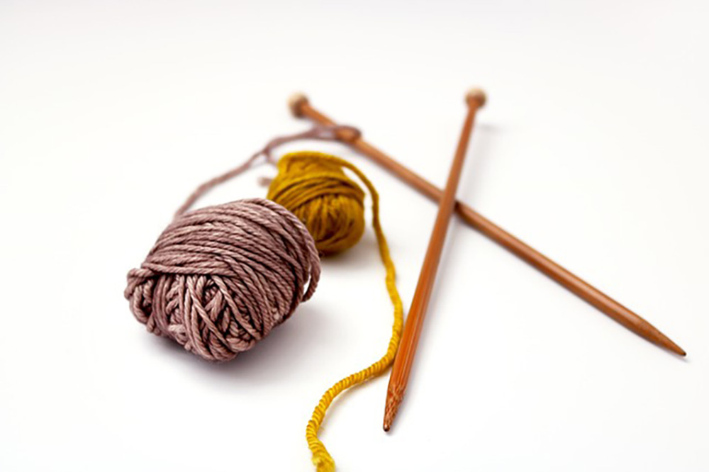
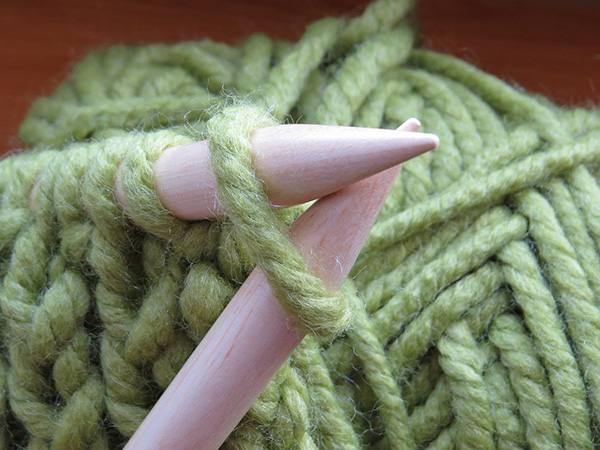

Whether as a background activity while watching tv or as a fully engrossing project, knitting has been a go-to hobby of mine for many years. I've knit countless hats, scarves, and mittens, but more recently, during the pandemic, my knitting projects have become more challenging and more abundant. Socks are notoriously challenging, so they were a perfect pandemic activity. More complex sweaters have also been fun challenges during this time, as I'm able to delve into a fun craft that I really enjoy. .
 While it may not be the average high schooler's activity, that's when I picked up knitting. My very first project was a square for a blanket that members of my community were making for a donation. After that, I was hooked! I find the entire process to be enjoyable - researching and picking out a project pattern, casting on the first stitches, transitiontion between sections, and then being able to zone out and relax while doing large sections. Larger projects like sweaters can get a bit exhausting when sewing or knitting sections together is involved, but seeing the finished product and seeing the recipient enjoy it, is definitely worth the effort.
A common misconception is that knitting is very complicated. Truthfully, it took me a few tries (and a lot of unraveled stitches) to learn the basics when I first started, but one you have the basics down - casting on, casting off, knitting, and purling - it's easy learn more complex stitches and take on any pattern. When I get stuck, it's been great to en able to find videos on YouTube to remind me of a stitch or other method, and get right back to it. There are even free videos to show the basics of how to knit, and it's easy to find free patterns online. So if you are looking for a new hobby, order some needles, a ball of yarn, and cast on!